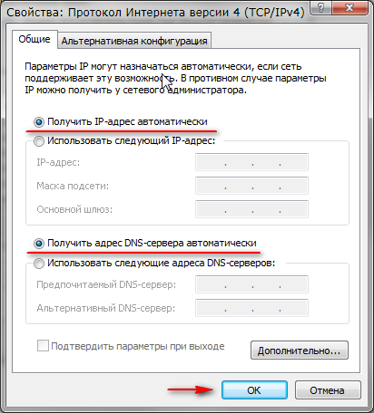

Настройка компьютера В правом нижнем углу экрана, там где часы, нажимаем правой кнопкой на значке сети выбираем Центр управления сетями и общим доступом.  Теперь переходите непосредственно к настроке роутера.